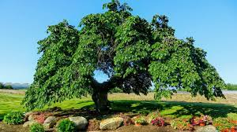

-
Dub
Dub je listnatý strom, který se vyskytuje v lesích a parcích po celém Česku.
-
Borovice
Borovice je jehličnatý strom, který roste zejména v horských oblastech Česka.
-
Bříza
Bříza je listnatý strom, který se vyskytuje v různých typech lesů po celém Česku.
-

Jilm
Jilm je listnatý strom, který roste v lesích a parcích v Česku a mnoha dalších zemích Evropy.
-

Buk
Buk je listnatý strom, který se vyskytuje v lesích a parcích v Česku a mnoha dalších zemích Evropy.
-
Javor
Javor je listnatý strom, který se vyskytuje v lesích a parcích po celém světě.
-
Osika
Osika je listnatý strom, který se vyskytuje v lesích a parcích po celém světě.
-

Lípa
Lípa je listnatý strom, který se vyskytuje v lesích a parcích po celé Evropě.
-
Smrk
Smrk je jehličnatý strom, který se vyskytuje v horách po celém světě.
-
Hloh
Hloh je keř nebo malý strom, který se vyskytuje v lesích a parcích po celém světě.
-
Kaštan
Kaštan je listnatý strom, který se vyskytuje v lesích a parcích po celé Evropě a Asii.
-
Topol
Topol je listnatý strom, který se vyskytuje v lesích a parcích po celém světě.
-
Jasan
Jasan je listnatý strom, který se vyskytuje v lesích a parcích po celé Evropě a Asii.
-
Tis
Tis je jehličnatý strom, který roste v horských oblastech Evropy a Asie.
-
Hrušeň
Hrušeň je ovocný strom, který se pěstuje v Česku i jinde po světě.
-
Jabloň
Jabloň je ovocný strom, který se pěstuje v Česku i jinde po světě.